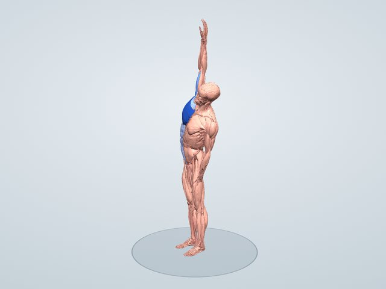

ストレッチ図鑑
体の横を伸ばす(右)
腕を頭の上へ伸ばして上体を横に倒す、体の側面のストレッチです。広背筋・腹斜筋・腰方形筋・大円筋など、わき腹から腰にかけての筋を伸ばします。
一般に伸ばされる筋: 広背筋・腹斜筋・腰方形筋・大円筋
3Dで動かして見る 無料で見られます

伸びる筋のしくみ
腰方形筋は骨盤の上と一番下の肋骨・腰椎をつなぐ腰の奥の筋で、上体を横に倒すと反対側が伸ばされます。腹斜筋は肋骨と骨盤を斜めにつなぐわき腹の筋、広背筋は腰から上腕に付く筋で、腕を頭の上へ伸ばしたまま横に倒すと、わき腹から脇の下までが一続きに伸びます。片側にかばんを持つ、片足に体重をかけて立つなどのくせで左右差が出やすい部分です。
伸びる筋(3Dモデルでの計算)
伸ばした姿勢で、それぞれの筋が関節の動きで伸ばされうる最大の長さを100としたときに、どこまで伸びているかの推定です。青い札の「+◯%」は、立った姿勢のときより筋が何%長くなったかです。
- 大円筋(右)+60.8%79
- 烏口腕筋(右)+22.1%77
- 広背筋(右)+41.2%77
- 大胸筋 胸肋部(右)+29.3%74
- 腰外側横突間筋 腹側部(右)+10.8%68
- 腰外側横突間筋 背側部(右)+13.7%67
- 腰多裂筋(右)+10.4%58
- 腹横筋(右)+15.7%54
やり方
- 足を腰幅に開いて立つ
- 右腕を頭の上へまっすぐ伸ばす
- 左手を腰に置き、上体をゆっくり左へ倒す
- 右のわき腹が伸びるところで20〜30秒保つ。左右を入れかえて行う
前かがみにならず、真横へ倒します。
ポイント
- 上体が前や後ろに傾かないよう、真横に倒す
- 伸ばした腕を斜め上へ遠くへ伸ばす
- 息を吐きながら倒す
よくある間違い
- 上体が前に倒れて、わき腹が伸びていない
- 腰を横に突き出しすぎる
時間と回数の目安
左右20〜30秒ずつ2回。朝起きたときや、長く座ったあとに。
やさしくする方法
椅子に座って行う。腕を上げずに、手を頭の後ろに添える。
強く伸ばす方法
足を交差させて(右脚を後ろ)行うと、腰から太ももの外側まで伸びます。
注意すること
腰に痛みやしびれが出るときは、倒す角度を小さくしてください。
同じ部位のストレッチ
伸びる筋の割合は3Dモデルによる推定で、体格や柔軟性によって変わります。ストレッチは痛みのない範囲で行い、痛みやしびれが出たときは中止してください。持病やけががある人は、医師や専門家に相談してから行ってください。